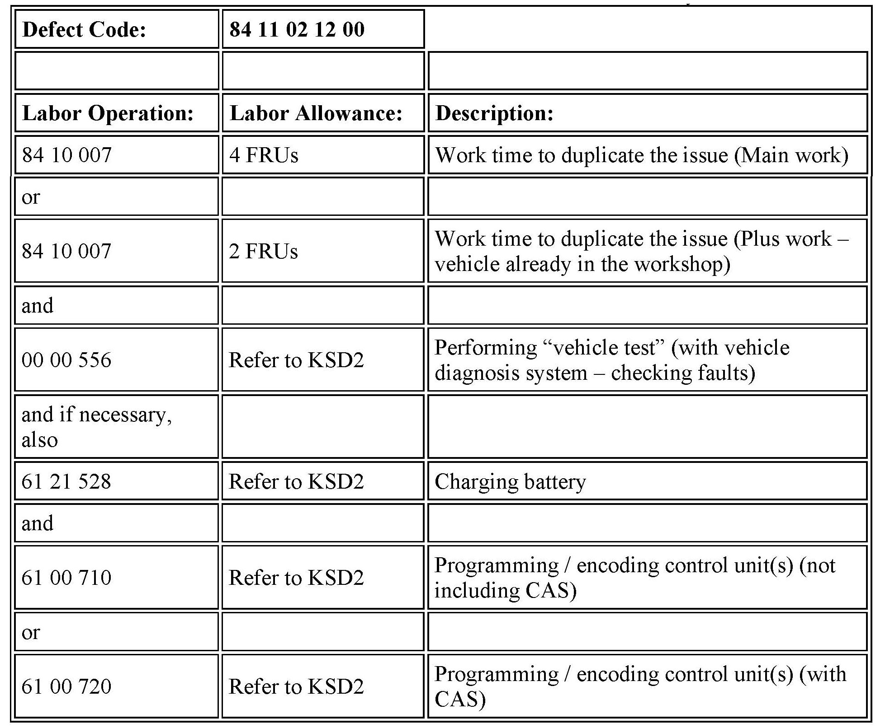

Infotainment - Roadside Assistance And BMW Services Inoperative
SI B84 03 13Communication Systems
April 2013
Technical Service
This Service Information bulletin supersedes SI B84 03 13 dated February 2013.
[NEW] designates changes to this revision
SUBJECT
Roadside Assistance and BMW Online Services Inoperative After Programming
MODEL
E82
E88
E89
E90
E91
E92
E93
With Navigation system option 609
Produced from August 18, 2008 to August 31, 2010
SITUATION
[NEW] Roadside Assistance and BMW Online services are inoperative afier programming the vehicle with ISTA/P 2.48 to 2.49.0. The symptoms are as follows:
^ BMW Online - No network available when selected
^ Roadside Assistance - When selected, a message stating "Service not enabled or contract expired" is displayed. Also, "Start service" is grayed out and cannot be selected.
CAUSE
Software error in the CIC (Car Information Computer)
[NEW] PROCEDURE
Do not replace parts!
Perform the steps below.
1. Duplicate the issue.
2. Verify the customer has a valid BMW Assist account as follows:
a. Check the TCU ESN/IMEI number in the DCSnet warranty history.
^ If it is listed as "Inactive," no further steps are necessary.
^ If it is listed as "Active," proceed to the next step.
3. Call BMW Assist and verify the customer is enrolled in the services:
^ Roadside Assistance
^ BMW Online
4. If the customer has a valid BMW Assist account, make an emergency test call by pressing the SOS button. Advise the Assist representative that this is a BMW test call. Ask him or her to verify the following information:
^ VIN
^ Vehicle position
^ All the data is successfully transferred
Then ask the Assist representative to end the call.
5. Perform a Roadside Assistance test call via iDrive. If this does not work, use the BMW Online search function.
6. If both steps 3 and 4 fail, this SI no longer applies. Continue diagnosis using ISTA.
7. If ONLY step 4 above fails, proceed with the following steps:
^ Program the vehicle using ISTA/P 2.49.1 or higher
^ The I-level after programming will be E89-13-03-502 or higher.
Note that ISTA/P will automatically reprogram and code all programmable control modules that do not have the latest software.
For information on programming and coding with ISTA/P, refer to CenterNet / Aftersales Portal / Service / Workshop Technology / Vehicle Programming.
Note:
When the ISTA system message displays: Battery voltage only "XX.XX" V. Please connect charger. Please note the displayed battery voltage reading in the repair order comments section.

[NEW] WARRANTY INFORMATION
Covered under the terms of the BMW New Vehicle/SAV Limited Warranty.
Refer to KSD2 for the corresponding flat rate unit (FRU) allowance. Enter the Chassis Number, which consists of the last 7 digits of the Vehicle Identification Number (VIN). Click on the "Search" button, and then enter the applicable flat rate labor operation in the FR code field.
If a control module was working properly and/or had no related faults stored prior to vehicle programming and it fails to program correctly or requires initialization, this additional work must be claimed with separate labor operations under the defect code listed above, refer to KSD2.